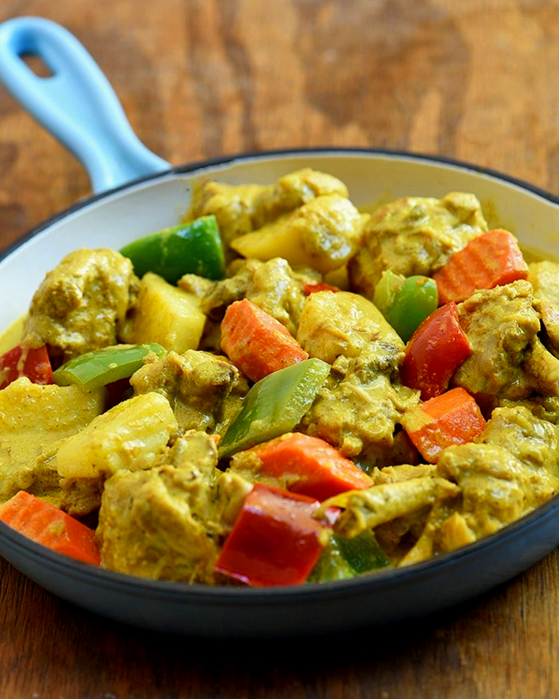

Chicken Curry

A spicy creamy Filipino dish with a chicken main ingredient.
This delicious dish is mostly made in the Philippines.
Chicken Curry is one of the most delicious dish in the Philippines, especially paired with rice. Best combination.
You can make chicken curry on your own :) and enjoy the meal.
This are the ingredients of the Chicken Curry
- 1 kilo chicken
- 2 medium sized potatoes chopped
- 1 big carrot sliced
- 1 tbsp garlic minced
- 3 stalks celery cut into 2 inches length
- 1 medium onion chopped
- 1 small red bell pepper cut into cubes
- 2 tbsp fish sauce
- 1 cup coconut milk
- 2 tbsp curry powder
- 1 thumb ginger cut into strips
- 1 cup water
In order to cook chicken curry you need to do this following steps:
- Cut the chicken into pieces. Leave the chicken bone-in. If you prefer boneless chicken meat, then de-bone the chicken.
- Heat up a deep pot and add the oil.
- Fry the potato and carrots for 2 minutes and set aside
- Sauté Chicken together with garlic, onion and ginger.
- When garlic is light brown in color add fish sauce, and curry powder
- Stir well then add water then cover the pot and lower the heat to medium and simmer until the chicken is tender.
- Once the chicken is cooked add the red bell pepper, celery, carrot and potato then simmer for 5 minutes
- Add the coconut milk and mix well. Simmer for another 5 minutes.
- Serve hot with rice.
These are other delicious dishes in the Philippines that you would like to cry